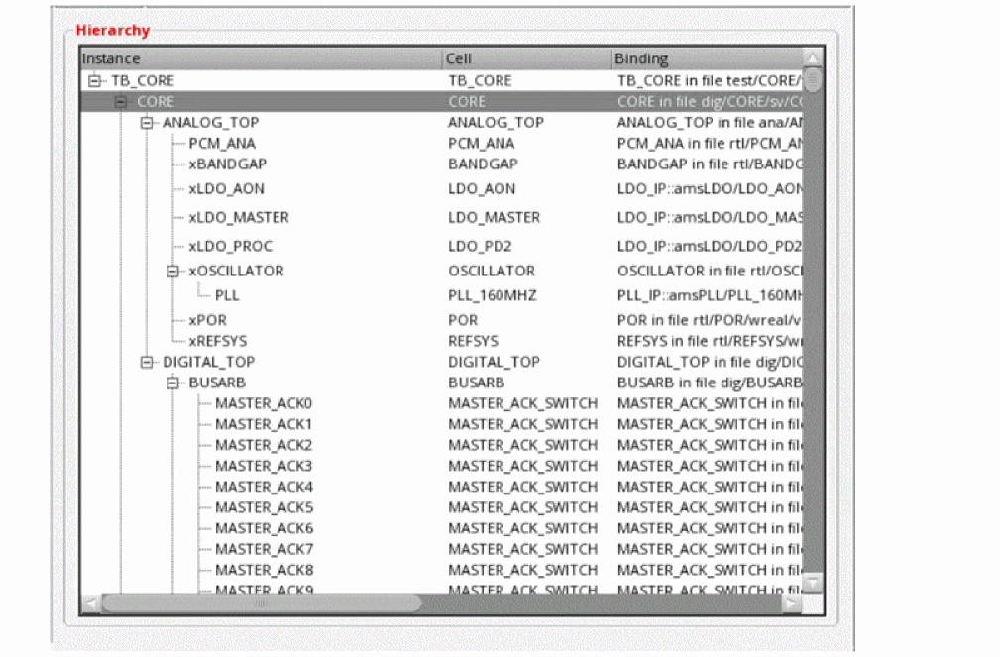
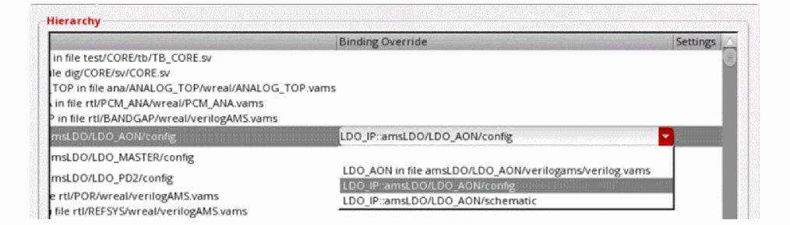

Overriding Instance Bindings
You can override a cellview binding to use a Virtuoso config or schematic view instead of a text cellview. The drop-down list in the Binding Override column shows the name of the corresponding library, cell, and config or schematic view.
The Virtuoso cellviews for which either of the following conditions is satisfied are displayed in the Binding Override column:
- Aconfig view is available and the design sub-top (schematic or text) cell name is the same as the cell or block name
- Aschematic view is available and the cell name is the same as the cell or block name
- Add xrun files in the Use Existing xrun Files section.
- Add Virtuoso directories in the Virtuoso Directories section.
-
Click Update
on the toolbar to update the hierarchy after adding all the
xrunscripts and Virtuoso directories.
CLIPS elaborates the design to identify the Virtuoso cellviews available for the cells listed in the Cell column.
 -
For each cell for which you need to override the cellview binding, select the config or schematic cellview name from the drop-down list in the Binding Override column.

Related Topics
Associating an Instance with an ADE State.
Return to top